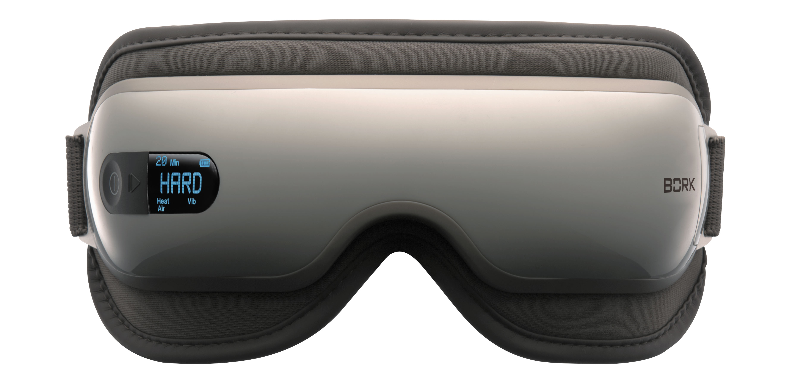

Противопоказания к использованию D600/601
- Данный прибор не предназначен для использования лицами (включая детей) с ограниченными возможностями сенсорной системы, ограниченными интеллектуальными возможностями.
- Не используйте массажер, если вы страдаете от глаукомы, катаракты, отслойки сетчатки или других глазных заболеваний.
- Используйте массажер с осторожностью, если у вас были какие-либо операции на глазах. Перед использованием проконсультируйтесь с врачом.
- Немедленно прекратите использовать прибор, если почувствовали недомогание.
- Используйте массажёр с осторожностью, если вы перенесли инсульт или страдаете от гипертонии и гипотонии. Перед использованием проконсультируйтесь с врачом.
- Не используйте устройство после употребления алкоголя.
- Перед использованием убедитесь, что вы не в контактных линзах.
- Этот прибор не предназначен для диагностики, терапии и других медицинских целей.